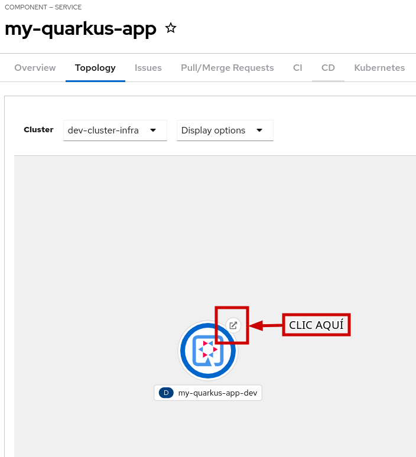

Probar aplicacion en desarrollo
-
Cambia a la pestaña Topology, verás que el Pod está rodeado por un círculo azul, esto indica que se está ejecutando correctamente.
-
Para abrir la aplicación, haz clic en el icono que se encuentra en la esquina derecha del Pod.
-
Tu aplicación se abrirá en una nueva pestaña del navegador.

-
Prueba el cambio que has implementado haciendo clic en el link "hello"; deberías ver que la API devuelve "Hello from RHDH" como se esperaba.
-
Ahora, cambia a la pestaña Overview.
-
Aquí observarás que la aplicación está sincronizada y se encuentra en estado "healthy" en ArgoCD.
-
Ve a la pestaña Image Registry.
-
El Registry debería contener las imágenes.
-
Puedes ver los resultados del escaneo de vulnerabilidades para la imagen taggeada como latest haciendo clic en el enlace que aparece en la columna Security Scan.
-
Esta sección mostrará todas las vulnerabilidades identificadas para la imagen, proporcionando más detalles de seguridad.
-
Por último, cambia a la pestaña Docs.
-
Aquí puedes comprobar que la documentación ha sido actualizada con los cambios que has hecho.